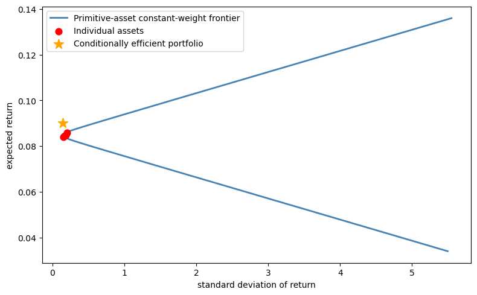

42. The Role of Conditioning Information in Asset Pricing#
42.1. Overview#
Hansen and Richard [1987] investigate testable implications of equilibrium asset pricing models.
This lecture builds on the mean-variance frontier and stochastic discount factor framework developed in Elementary Asset Pricing Theory.
In a competitive equilibrium model, prices are determined by a pricing function that maps uncertain future payoffs into current prices.
Alternative models of asset prices – built from different assumptions about preferences, endowments, and technology – imply alternative pricing functions.
Two models that imply the same pricing function are observationally indistinguishable using payoff and price data alone.
So models of asset prices can be indexed by their implied pricing functions.
A key challenge for empirical work is the role of conditioning information.
Theoretical models have traders forming portfolios contingent on information available at the time of trading.
But empirical tests typically use unconditional moments – time-series averages of payoffs and prices – that do not depend on this conditioning information.
Hansen and Richard develop the theory needed to navigate between these two levels. The paper proceeds in two steps:
Derive pricing functions from the primitive assumptions of value-additivity and continuity, and show that each pricing function can be represented using a unique stochastic discount factor (SDF) \(p^*\) via an inner product on a conditional Hilbert space.
Deduce testable restrictions that these pricing functions imply for population moments of payoffs and prices – moments that an econometrician can estimate from time-series data.
The main results are:
A conditional Riesz Representation Theorem showing \(\pi(p) = E(p \, p^* \mid \mathcal{G})\) for a unique benchmark payoff \(p^*\).
A conditional two-fund theorem characterizing the mean-variance frontier conditioned on \(\mathcal{G}\).
A precise characterization of the unconditional mean-variance frontier, and a demonstration that omitting conditioning information can cause a return that is on the conditional frontier to fall off the unconditional frontier.
A single-beta representation (conditional CAPM), and conditions under which it does and does not survive aggregation to unconditional moments.
A pseudo-pricing function \(\pi^*(p) = E[\pi(p)]\) that maps payoffs to real numbers and connects directly to the GMM approach of Hansen and Singleton [1982].
We make the following imports.
import numpy as np
import matplotlib.pyplot as plt
from scipy.optimize import minimize
from scipy import stats
import pandas as pd
42.2. Data generation#
Hansen and Richard begin by describing a class of data-generation processes to which their theoretical analysis applies.
This section connects their abstract framework to the kind of data an econometrician can observe.
42.2.1. The probability space and stationarity#
Let \((\Omega, \mathcal{F}, \Pr)\) be a probability space.
A measure-preserving, ergodic transformation \(S : \Omega \to \Omega\) governs the deterministic evolution of the state of the world over time.
If \(\omega\) is the state at time zero, then \(S^t(\omega)\) is the state at time \(t\).
A vector of observables \(x(\omega)\) maps \(\Omega\) into \(\mathbb{R}^k\).
The time-\(t\) observation vector is
which defines a strictly stationary stochastic process \(\{x_t : t = 1, 2, \ldots\}\).
Note
A process \(\{x_t\}\) is strictly stationary if its joint distribution is invariant to time shifts: for any times \(t_1, \ldots, t_k\) and any shift \(h\),
This is stronger than weak (covariance) stationarity, which only requires time-invariant first and second moments.
Here strict stationarity follows from \(S\) being measure-preserving: since \(x_t = x[S^t(\omega)]\), shifting time by \(h\) is the same as applying \(S^h\), which preserves the probability measure.
Because \(S\) is ergodic, time-series averages converge almost surely to population means:
as long as \(x\) has a finite first moment.
This lets an econometrician learn about unconditional moments by computing sample averages from observed time series.
42.2.2. Information and payoffs#
At each date \(t\), traders observe information captured by the sigma-algebra
where \(\mathcal{G}\) is the information at time zero.
We write \(I_t\) for the set of random variables measurable with respect to \(\mathcal{G}_t\), and \(I\) for those measurable with respect to \(\mathcal{G}\).
A one-period security purchased at time \(t\) has a payoff at time \(t+1\).
Let \(p\) denote a random variable in \(I_1\) used to define a sequence of payoffs
The pricing function \(\pi\) maps payoffs into prices.
The time-zero price of \(p\) is \(\pi(p)\), a random variable in \(I\).
Since both the payoff sequence \(\{p_{t+1}\}\) and the price sequence \(\{\pi_t(p_{t+1})\}\) are strictly stationary, their moments can be estimated by time-series averages.
42.3. Pricing functions and Hilbert space machinery#
42.3.1. Properties of pricing functions#
Hansen and Richard assume the pricing function \(\pi\) maps a set of payoffs \(P\) into prices in \(I\).
Four assumptions are imposed:
Assumption 42.1 (Conditionally complete payoff space)
The set of payoffs \(P\) is a conditionally complete linear subspace of \(P^+ = \{p \in I_1 : E(p^2 \mid \mathcal{G}) < \infty\}\).
This assumption has two parts.
Linear subspace means that \(P\) is closed under conditional linear combinations: traders can form portfolios with information-contingent weights and the resulting payoffs remain in \(P\).
Conditionally complete means that limits of conditionally Cauchy sequences also belong to \(P\), which is needed to make \(P\) a conditional Hilbert space.
Assumption 42.2 (Value-additivity)
For any payoffs \(p_1, p_2 \in P\) and any \(w_1, w_2 \in I\),
This says that the price of a portfolio is the portfolio of the prices.
The portfolio weights \(w_1, w_2\) are allowed to be random variables measurable with respect to \(\mathcal{G}\), reflecting the fact that traders choose portfolio weights based on current information.
Assumption 42.3 (Conditional continuity)
If a sequence of payoffs \(\{p_j\}\) converges conditionally to zero, then their prices converge in probability to zero.
Assumption 42.4 (Existence of returns)
The set of returns \(R = \{p \in P : \pi(p) = 1\}\) is nonempty.
This guarantees that there exist payoffs with unit price, i.e., assets that can be purchased for one unit of the numeraire today.
Assumption 42.2 and Assumption 42.3 together make \(\pi\) a conditional continuous linear functional on \(P\).
42.3.2. The conditional Hilbert space#
To apply the theory of linear functionals, Hansen and Richard build a conditional Hilbert space of payoffs.
Let
be the set of payoffs with finite conditional second moment.
Define a conditional inner product for \(p_1, p_2 \in P^+\):
and the associated conditional norm
Both the inner product and the norm take values in \(I\).
They are random variables, not scalars.
This is the key difference from a standard \(L^2\) Hilbert space.
Convergence is defined using convergence in probability of these random variables:
Definition 42.1 (Conditional convergence)
\(\{p_j\}\) converges conditionally to \(p_0\) if \(\lim_{j \to \infty} \Pr\{\|p_j - p_0\|_{\mathcal{G}} > \varepsilon\} = 0\) for all \(\varepsilon > 0\).
Definition 42.2 (Conditionally Cauchy)
\(\{p_j\}\) is conditionally Cauchy if \(\lim_{j,k \to \infty} \Pr\{\|p_j - p_k\|_{\mathcal{G}} > \varepsilon\} = 0\) for all \(\varepsilon > 0\).
A key technical result (proved in the Appendix of the paper) is that \(P^+\) is conditionally complete: every conditional Cauchy sequence converges conditionally to an element of \(P^+\).
This is the conditional analogue of the Riesz-Fischer theorem.
This is exactly the property required of \(P\) by Assumption 42.1.
42.4. The Riesz representation: the stochastic discount factor#
The conditional completeness and the conditional continuity of \(\pi\) together deliver the central representation theorem of the paper.
Theorem 42.1 (Conditional Riesz Representation)
Suppose Assumption 42.1 – Assumption 42.4 are satisfied. Then there exists a unique payoff \(p^* \in P\) such that
Moreover, \(\Pr\{\|p^*\|_{\mathcal{G}} > 0\} = 1\).
The payoff \(p^*\) is the stochastic discount factor (SDF), also called the benchmark payoff.
Recall that the pricing function \(\pi\) was introduced above as an abstract mapping from payoffs to prices, subject only to value-additivity (Assumption 42.2) and continuity (Assumption 42.3).
The theorem says that any such \(\pi\) can be represented concretely as \(\pi(p) = E(p \, p^* \mid \mathcal{G})\) for a unique \(p^*\).
The payoff \(p^*\) is called the stochastic discount factor (SDF) or benchmark payoff.
Different equilibrium models of asset prices correspond to different choices of \(p^*\).
42.4.1. No-arbitrage and positivity of \(p^*\)#
Definition 42.3 (No-arbitrage)
A pricing function \(\pi\) has no arbitrage opportunities on \(P\) if for any nonnegative payoff \(p \geq 0\) with \(\Pr\{p > 0\} > 0\),
This is the conditional counterpart to the no-arbitrage assumption used by Ross [1978].
Since the price \(\pi(p)\) is a random variable (it depends on \(\mathcal{G}\)), this says that in no state of the world can the price be non-positive while the payoff is strictly positive.
When \(\pi\) has no arbitrage opportunities and \(P = P^+\), then \(p^*\) is strictly positive with probability one:
In this case \(p^*\) can be interpreted as the intertemporal marginal rate of substitution of the numeraire good – it converts future payoffs into today’s prices.
42.4.2. The benchmark return \(r^*\)#
Since \(\pi(p^*) = \langle p^* \mid p^* \rangle_{\mathcal{G}} = E(p^{*2} \mid \mathcal{G})\) is positive with probability one, we can define the benchmark return
This return belongs to \(R = \{p \in P : \pi(p) = 1\}\), the set of all unit-price payoffs (returns).
Lemma 42.1 (Minimum second moment)
\(r^*\) has the minimum conditional second moment among all returns:
By the Law of Iterated Expectations,
This extends to unconditional second moments: \(r^*\) has the minimum unconditional second moment as well.
Let’s illustrate Lemma 42.1 with a numerical example.
We draw a lognormal \(p^*\) and generate five asset payoffs that depend linearly on \(p^*\) plus idiosyncratic noise.
Prices are computed as \(\pi(p_i) = E(p_i \cdot p^*)\), and returns are \(r_i = p_i / \pi(p_i)\).
We first verify the pricing equation \(E(r_i \cdot p^*) = 1\) holds up to sampling error.
We then search over portfolio weights (constrained to sum to one) to minimize the unconditional second moment \(E(r^2)\).
By Lemma 42.1, this portfolio approximates \(r^*\), so its \(E(r^2)\) should be lower than that of any individual asset.
def simulate_sdf_and_returns(T=10000, n_assets=5, seed=42):
"""Simulate lognormal SDF and multiple asset returns."""
rng = np.random.default_rng(seed)
σ_m = 0.15
mu_m = -0.5 * σ_m**2
pstar = np.exp(mu_m + σ_m * rng.standard_normal(T))
# Asset payoffs: p_i = α_i + β_i * p* + noise
βs = rng.uniform(-2, 2, n_assets)
αs = rng.uniform(1, 3, n_assets)
payoffs = αs + np.outer(pstar, βs) + 0.3 * rng.standard_normal((T, n_assets))
prices = np.mean(payoffs * pstar[:, None], axis=0)
returns = payoffs / prices
return pstar, returns, prices
pstar, returns, prices = simulate_sdf_and_returns()
pricing_errors = np.mean(returns * pstar[:, None], axis=0) - 1.0
print("Pricing errors E[r*p* - 1] (should be approx 0):")
for i, err in enumerate(pricing_errors):
print(f" Asset {i+1}: {err:.6f}")
n = returns.shape[1]
def objective(w):
r_p = returns @ w
return np.mean(r_p**2)
result = minimize(objective, np.ones(n)/n, method='SLSQP',
constraints=[{'type': 'eq', 'fun': lambda w: w.sum() - 1}],
bounds=[(-2, 2)] * n)
r_star_approx = returns @ result.x
print(f"\nMinimum E[r^2] portfolio: {np.mean(r_star_approx**2):.6f}")
print(f"Individual asset E[r^2]: {[f'{np.mean(returns[:,i]**2):.4f}' for i in range(n)]}")
Pricing errors E[r*p* - 1] (should be approx 0):
Asset 1: -0.000000
Asset 2: 0.000000
Asset 3: -0.000000
Asset 4: 0.000000
Asset 5: -0.000000
Minimum E[r^2] portfolio: 0.990862
Individual asset E[r^2]: ['0.9991', '1.4329', '1.0013', '6.8601', '1.1054']
42.5. Implications for omitting conditioning information#
Now we analyze the effect of omitting conditioning information when studying the mean-variance implications of asset pricing models.
42.5.1. Returns, zero-price payoffs, and the decomposition of \(R\)#
Define two key level sets of \(\pi\):
\(R\) is the set of all returns (unit-price payoffs) and \(Z\) is the set of zero-price payoffs (excess returns, hedging payoffs, etc.).
Since \(\pi\) is a conditional linear functional, the zero payoff is in \(Z\), and Assumption 42.4 guarantees that \(R\) is nonempty.
Using \(r^*\) as a benchmark, any return \(r \in R\) can be decomposed as
since \(\pi(r) = \pi(r^*) + \pi(z) = 1 + 0 = 1\).
Because \(r^*\) has minimum conditional second moment (Lemma 42.1), it is conditionally orthogonal to all of \(Z\): \(\langle r^* \mid z \rangle_{\mathcal{G}} = 0\) for all \(z \in Z\).
This gives a conditionally orthogonal decomposition of \(R\).
42.5.2. The role of \(z^*\)#
The set \(Z\) itself can be decomposed.
There is a unique payoff \(z^* \in Z\) that satisfies
This \(z^*\) plays the role of the “conditional mean direction” in \(Z\).
Its conditional second moment equals its conditional mean:
which implies \(0 < E(z^* \mid \mathcal{G}) \leq 1\) whenever markets are not risk-neutral.
Using \(z^*\), the set \(Z\) decomposes as
where \(N = \{z \in Z : E(z \mid \mathcal{G}) = 0\}\).
Combining this with the \(R = r^* + Z\) decomposition gives the full representation of all returns:
42.5.3. The conditional mean-variance frontier#
Recall from Elementary Asset Pricing Theory that the unconditional mean-variance frontier can be derived from \(E(mR) = 1\) via the Cauchy-Schwarz inequality.
Here we develop the conditional counterpart using the \(r^*\), \(z^*\) decomposition.
With this decomposition in hand, the conditional mean-variance problem becomes straightforward.
Lemma 42.2 (Conditional two-fund theorem)
Minimize \(\langle r \mid r \rangle_{\mathcal{G}}\) for \(r \in R\) subject to \(E(r \mid \mathcal{G}) = w\) for some target \(w \in I\).
The solution is
where
Every conditionally efficient return is a conditional linear combination of \(r^*\) and \(z^*\), with the weight \(w^*\) being a random variable that depends on the conditioning information \(\mathcal{G}\).
42.5.4. The unconditional mean-variance frontier#
To connect to data, restrict attention to payoffs with finite unconditional second moments:
with the unconditional inner product \(\langle p_1 \mid p_2 \rangle = E(p_1 p_2)\).
Define the unconditional counterparts:
By the Law of Iterated Expectations, \(z^*\) continues to represent the mean direction unconditionally:
Lemma 42.3 (Unconditional two-fund theorem)
Minimize \(\langle r \mid r \rangle = E(r^2)\) for \(r \in R^*\) subject to \(E(r) = c\) for some constant \(c\).
The solution is
where
The key difference: \(c^*\) is a constant, while \(w^*\) in the conditional problem is a random variable.
42.5.5. Conditional efficiency does not imply unconditional efficiency#
This is the central empirical message of the paper.
A conditionally efficient return \(r_w = r^* + w^* z^*\) is on the unconditional frontier only when \(w^*\) is constant with probability one.
When \(w^*\) varies with the state of the world – which is the typical case when traders use conditioning information – the return will be off the unconditional frontier.
This has direct implications:
The CAPM (Sharpe-Lintner-Mossin) implies that the market portfolio is a conditional reference return. But the market return need not be a reference return for unconditional single-beta tests.
Breeden’s consumption CAPM implies the return on aggregate consumption is a conditional reference return. Again, it need not serve as an unconditional reference.
Portfolio managers whose returns appear to be conditionally efficient may look inefficient when evaluated with unconditional data.
The following simulation illustrates this phenomenon.
def compute_mv_frontier(mean_returns, cov_matrix):
"""Compute the analytical mean-variance frontier."""
n = len(mean_returns)
ones = np.ones(n)
inv_cov = np.linalg.inv(cov_matrix)
A = mean_returns @ inv_cov @ mean_returns
B = mean_returns @ inv_cov @ ones
C = ones @ inv_cov @ ones
D = A * C - B**2
frontier_means = np.linspace(mean_returns.min() - 0.05,
mean_returns.max() + 0.05, 300)
frontier_vars = (C * frontier_means**2 - 2*B*frontier_means + A) / D
frontier_vols = np.sqrt(np.maximum(frontier_vars, 0))
return frontier_means, frontier_vols
def mv_weights(mu_vec, Sigma, target_mu):
"""Minimum-variance portfolio weights for a given target mean."""
n = len(mu_vec)
inv_cov = np.linalg.inv(Sigma)
ones = np.ones(n)
A = mu_vec @ inv_cov @ mu_vec
B = mu_vec @ inv_cov @ ones
C = ones @ inv_cov @ ones
D = A * C - B**2
g = (A * (inv_cov @ ones) - B * (inv_cov @ mu_vec)) / D
h = (C * (inv_cov @ mu_vec) - B * (inv_cov @ ones)) / D
return g + target_mu * h
def simulate_conditional_vs_unconditional(T=50000, seed=0):
"""Show that a conditionally efficient portfolio can be unconditionally inefficient."""
rng = np.random.default_rng(seed)
n_assets = 3
state = rng.integers(0, 2, T)
# Two regimes with different conditional means, common covariance
mu_low = np.array([0.05, 0.10, 0.08])
mu_high = np.array([0.12, 0.07, 0.09])
σ = np.array([0.15, 0.20, 0.18])
corr = np.array([[1.0, 0.3, 0.5],
[0.3, 1.0, 0.2],
[0.5, 0.2, 1.0]])
cov = np.diag(σ) @ corr @ np.diag(σ)
rets_low = rng.multivariate_normal(mu_low, cov, T)
rets_high = rng.multivariate_normal(mu_high, cov, T)
returns = np.where(state[:, None] == 0, rets_low, rets_high)
# Conditionally efficient weights for target mean = 0.09
target = 0.09
w_low = mv_weights(mu_low, cov, target)
w_high = mv_weights(mu_high, cov, target)
# Dynamic portfolio switches weights by state
port_rets = np.where(state == 0,
rets_low @ w_low,
rets_high @ w_high)
mu_unc = returns.mean(axis=0)
cov_unc = np.cov(returns.T)
front_mu, front_std = compute_mv_frontier(mu_unc, cov_unc)
return (port_rets.mean(), port_rets.std(),
front_mu, front_std, mu_unc, cov_unc)
mu_port, std_port, front_mu, front_std, mu_unc, cov_unc = \
simulate_conditional_vs_unconditional()
fig, ax = plt.subplots(figsize=(8, 5))
ax.plot(front_std, front_mu, lw=2,
label='Primitive-asset constant-weight frontier', color='steelblue')
ax.scatter(np.sqrt(np.diag(cov_unc)), mu_unc, color='red',
zorder=5, s=60, label='Individual assets')
ax.scatter(std_port, mu_port, color='orange', zorder=6, s=150,
marker='*', label='Conditionally efficient portfolio')
ax.set_xlabel('standard deviation of return')
ax.set_ylabel('expected return')
ax.legend()
plt.tight_layout()
plt.show()

Fig. 42.1 A conditionally efficient portfolio (star) lies to the left of the constant-weight frontier built from the three primitive assets (curve).#
42.5.6. The risk-free return#
Let’s consider another example.
When \(P\) contains a unit payoff and \(\pi\) has no arbitrage opportunities, there is a risk-free return
In the decomposition \(R = \{r^* + wz^* + n\}\), the risk-free return is \(r^f = r^* + r^f z^*\).
Because \(r^f\) is in general a random variable (it depends on \(\mathcal{G}\)), it lies on the conditional frontier but will be off the unconditional frontier unless \(r^f\) is constant.
42.6. The single-beta representation#
42.6.1. Conditional CAPM#
A return \(r_\beta \in R\) is a reference return for a conditional single-beta representation conditioned on \(\mathcal{G}\) if \(\Pr\{\mathrm{Var}(r_\beta \mid \mathcal{G}) = 0\} = 0\) and for all \(r \in R\),
where \(\alpha \in I\) is the conditional zero-beta return.
This is the conditional analogue of the CAPM security market line.
Lemma 42.4 (Conditional Roll’s theorem)
\(r_\beta\) is a reference return for a conditional single-beta representation if and only if \(r_\beta = r^* + w^* z^*\) for some \(w^* \in I\) satisfying
42.6.2. Unconditional single-beta representation#
The unconditional expected-return-beta representation was derived in Elementary Asset Pricing Theory.
The key question here is: when does the conditional single-beta representation survive aggregation to unconditional moments?
Corollary 42.1 (Unconditional single-beta representation)
\(r_\beta\) is a reference return for an unconditional single-beta representation if and only if \(r_\beta = r^* + c^* z^*\) for a constant \(c^*\) satisfying
This result has sharp empirical implications:
Even if the CAPM holds conditionally (e.g., the market portfolio is on the conditional frontier), the standard unconditional regression test – regressing asset returns on market returns and testing \(\alpha = 0\) – is testing a different hypothesis.
The unconditional single-beta representation holds only for returns built with constant portfolio weights.
We illustrate this by running CAPM regressions \(r_i = \alpha + \beta \, r_{\text{ref}} + \varepsilon\) using two different reference returns.
The first uses a portfolio on the unconditional mean-variance frontier, constructed with constant weights from the unconditional moments.
By Corollary 42.1, this is a valid reference for an unconditional single-beta representation, so the regression intercepts should be consistent with the zero-beta return \(\alpha\) implied by the corollary.
The second uses a conditionally efficient portfolio whose weights switch across regimes.
This portfolio is on the conditional frontier in each state, but its state-dependent weights violate the constant-weight requirement of Corollary 42.1, so the unconditional single-beta representation need not hold.
def capm_regression(returns, ref_return):
"""Run unconditional CAPM regressions: r_i = alpha + beta * r_ref + eps."""
n_assets = returns.shape[1]
alphas = np.empty(n_assets)
for i in range(n_assets):
slope, intercept, _, _, _ = stats.linregress(ref_return, returns[:, i])
alphas[i] = intercept
return alphas
# Simulate a two-regime economy
rng = np.random.default_rng(42)
T_capm = 50000
n_assets_capm = 4
state = rng.integers(0, 2, T_capm)
mu_low = np.array([0.02, 0.12, 0.04, 0.14])
mu_high = np.array([0.14, 0.02, 0.12, 0.01])
cov_capm = np.array([[0.01, 0.002, 0.004, 0.001],
[0.002, 0.01, 0.002, 0.001],
[0.004, 0.002, 0.01, 0.001],
[0.001, 0.001, 0.001, 0.01]])
rets_low = rng.multivariate_normal(mu_low, cov_capm, T_capm)
rets_high = rng.multivariate_normal(mu_high, cov_capm, T_capm)
returns_capm = np.where(state[:, None] == 0, rets_low, rets_high)
# Case 1: unconditional frontier portfolio (constant weights)
# Use the unconditional mean and covariance to find frontier weights
mu_unc = returns_capm.mean(axis=0)
cov_unc = np.cov(returns_capm.T)
w_frontier = np.linalg.solve(cov_unc, mu_unc)
w_frontier /= w_frontier.sum()
r_frontier = returns_capm @ w_frontier
# Case 2: conditionally efficient portfolio (state-dependent weights)
w_low = np.linalg.solve(cov_capm, mu_low)
w_low /= w_low.sum()
w_high = np.linalg.solve(cov_capm, mu_high)
w_high /= w_high.sum()
r_dynamic = np.where(state == 0,
rets_low @ w_low,
rets_high @ w_high)
alphas_frontier = capm_regression(returns_capm, r_frontier)
alphas_dynamic = capm_regression(returns_capm, r_dynamic)
print(f"{'Asset':<8} {'Frontier (const)':>18} {'Cond. eff. (dyn)':>18}")
for i in range(n_assets_capm):
print(f"{i+1:<8} {alphas_frontier[i]:>18.6f} {alphas_dynamic[i]:>18.6f}")
Asset Frontier (const) Cond. eff. (dyn)
1 0.000000 -0.016680
2 -0.000000 0.015022
3 -0.000000 -0.009735
4 -0.000000 0.018852
The constant-weight frontier portfolio produces intercepts close to a common value for every asset, confirming that the unconditional single-beta representation holds as predicted by Corollary 42.1.
In general, Corollary 42.1 guarantees a real zero-beta return \(\alpha\), but that \(\alpha\) need not be zero – it equals zero only under an extra normalization or for a specially chosen reference portfolio.
The conditionally efficient portfolio, whose weights switch between regimes, produces non-zero alphas despite being on the conditional frontier in each state.
This is exactly the gap that Hansen and Richard [1987] warns about: a return that is conditionally efficient need not serve as a valid reference for unconditional single-beta tests.
42.7. The pseudo-pricing function and connection to GMM#
42.7.1. Constructing \(\pi^*\)#
Everything we have derived so far is conditional on \(\mathcal{G}\): the pricing function \(\pi(p) = E(p \, p^* \mid \mathcal{G})\) maps payoffs into random variables, not numbers.
An econometrician, however, works with time-series data and computes sample averages, which estimate unconditional moments.
The question is: how do we go from the conditional theory to restrictions that can be tested with unconditional data?
Hansen and Richard’s solution is to define the pseudo-pricing function
This function maps payoffs to real numbers.
It behaves like a pricing function where the conditioning information set is the trivial sigma-algebra (containing only \(\Omega\) and \(\emptyset\)).
For \(\pi^*\) to be well defined on \(P^*\), the benchmark payoff \(p^*\) must itself have a finite unconditional second moment, i.e., \(p^* \in P^*\).
This is the content of Assumption 4.1 in Hansen and Richard [1987].
Whether it holds can depend on the choice of numeraire.
Theorem 42.2 (Pseudo-pricing function)
Suppose \(p^* \in P^*\) (equivalently, \(E(p^{*2}) < \infty\)).
Then \((P^*, \pi^*)\) satisfies all the assumptions imposed on \((P, \pi)\), with the trivial sigma-algebra replacing \(\mathcal{G}\).
Crucially, the same \(p^*\) represents both \(\pi\) and \(\pi^*\):
where the third equality uses the Law of Iterated Expectations and the last is the unconditional inner product.
Hansen and Richard show that if two pricing functions \(\pi\) and \(\pi^+\) agree on the full payoff space \(P^*\), then their benchmark payoffs coincide almost surely.
Thus conditioning down from \(\pi\) to \(\pi^*\) does not inherently lose discriminatory power.
The loss of information arises instead when an econometrician tests moment restrictions using only a subset of the payoffs in \(P^*\).
Two distinct pricing functions may imply the same \(\pi^*\) on that subset even though they differ on \(P^*\) as a whole.
42.7.2. Connection to Hansen-Singleton GMM#
The pseudo-pricing function underlies the Hansen and Singleton [1982] econometric approach.
If a model specifies \(p^*\) as a function of observable data – e.g., a parametric function of consumption growth \(p^* = p^*(\Delta c_{t+1}, \theta)\) – then the pricing restriction
holds for every payoff \(p \in P^*\).
An econometrician exploits this by forming moment conditions.
Multiplying by instruments \(z_t \in I\) (variables in the traders’ information set) gives
The parameter vector \(\theta\) is then estimated by GMM.
The choice of instruments determines how much conditioning information is exploited – more instruments increase efficiency but also increase the dimensionality of the GMM problem.
Notice that the payoffs used in this procedure can themselves be conditional linear combinations of primitive payoffs, as long as the conditioning weights are measurable with respect to \(\mathcal{G}\).
This gives the analyst flexibility in constructing the moment conditions, and corresponds to the instrumental variables used in the Hansen-Singleton analysis.
We now put this to work by testing a specific model of \(p^*\).
We construct a CRRA stochastic discount factor \(p^* = e^{-\delta - \gamma \Delta c}\) with \(\gamma = 2\) and simulated consumption growth, then check the Euler equation \(E(r \cdot p^*) = 1\) against returns generated by a different SDF.
The test computes the sample average of \(r \cdot p^* - 1\) for each asset, along with its standard error and t-statistic.
If the model is correct, these averages should be near zero.
We also test the instrumented moment conditions \(E[(r \cdot p^* - 1) \cdot z] = 0\) using lagged consumption growth as an instrument, which exploits additional conditioning information.
def gmm_euler_equation_test(pstar_hat, returns, instruments=None):
"""Test Euler equation restrictions E[r*p* - 1] = 0, optionally with instruments."""
T = len(pstar_hat)
n_assets = returns.shape[1]
moments = returns * pstar_hat[:, None] - 1.0
mean_m = moments.mean(axis=0)
se_m = moments.std(axis=0) / np.sqrt(T)
print("Euler equation tests: E[r*p* - 1] = 0")
print(f"{'Asset':<8} {'Mean':>10} {'Std err':>10} {'t-stat':>10}")
for i in range(n_assets):
t = mean_m[i] / se_m[i]
print(f"{i+1:<8} {mean_m[i]:>10.5f} {se_m[i]:>10.5f} {t:>10.2f}")
if instruments is not None:
print("\nInstrumented moments: E[(r*p* - 1)*z] = 0")
k = instruments.shape[1]
for j in range(k):
z = instruments[:, j]
inst_m = moments * z[:, None]
mean_inst = inst_m.mean(axis=0)
se_inst = inst_m.std(axis=0) / np.sqrt(T)
print(f" Instrument {j+1}:")
for i in range(n_assets):
t = mean_inst[i] / se_inst[i]
print(f" Asset {i+1}: mean={mean_inst[i]:.5f}, "
f"se={se_inst[i]:.5f}, t={t:.2f}")
T = 10000
rng = np.random.default_rng(7)
δ, γ = 0.02, 2.0
c_growth = rng.normal(0.02, 0.03, T)
pstar_model = np.exp(-δ - γ * c_growth)
pstar_model /= pstar_model.mean()
_, returns_data, _ = simulate_sdf_and_returns(T=T)
instruments = c_growth[:-1].reshape(-1, 1)
gmm_euler_equation_test(pstar_model[1:], returns_data[1:], instruments)
Euler equation tests: E[r*p* - 1] = 0
Asset Mean Std err t-stat
1 -0.00752 0.00134 -5.61
2 0.04184 0.00593 7.06
3 -0.01126 0.00166 -6.78
4 0.19126 0.02334 8.19
5 0.01307 0.00286 4.57
Instrumented moments: E[(r*p* - 1)*z] = 0
Instrument 1:
Asset 1: mean=-0.00021, se=0.00005, t=-4.37
Asset 2: mean=0.00106, se=0.00021, t=5.02
Asset 3: mean=-0.00023, se=0.00006, t=-3.88
Asset 4: mean=0.00482, se=0.00084, t=5.72
Asset 5: mean=0.00024, se=0.00010, t=2.26
The large t-statistics reject the Euler equations for every asset, both with and without instruments.
This is by construction: the returns were generated by simulate_sdf_and_returns, which uses a lognormal SDF with \(\sigma_m = 0.15\), while the CRRA model being tested has \(\gamma = 2\) and \(\sigma_c = 0.03\), implying far less SDF volatility.
The two SDFs do not match, so the moment conditions \(E(r \cdot p^* - 1) = 0\) fail.
This illustrates how GMM tests can detect misspecification: when the proposed \(p^*\) is not the true pricing kernel, the Euler equation restrictions are violated and the data reject the model.
42.8. Summary#
The main contributions of Hansen and Richard [1987] are:
Conditional Riesz Representation: Every admissible pricing function can be written as \(\pi(p) = E(p \, p^* \mid \mathcal{G})\) for a unique SDF \(p^*\). Different models of asset prices are indexed by their \(p^*\).
Conditional mean-variance frontier: The frontier is spanned by \(r^*\) and \(z^*\), giving a conditional two-fund theorem with random weights.
Conditional vs unconditional frontiers: A return can be on the conditional frontier without being on the unconditional frontier. The unconditional frontier uses constant weights \(c^*\); the conditional frontier uses random weights \(w^*\). The gap matters for empirical tests.
Single-beta representation: The conditional CAPM extends Roll’s characterization to conditioning information. The unconditional version holds only for returns with constant portfolio weights – so testing the CAPM with unconditional regressions tests a weaker hypothesis.
Pseudo-pricing function: \(\pi^*(p) = E[\pi(p)] = E(p \, p^*)\) maps payoffs to real numbers and connects directly to Hansen and Singleton [1982] GMM estimation. On the full payoff space \(P^*\), two pricing functions that imply the same \(\pi^*\) must share the same benchmark payoff \(p^*\).
The loss of discriminatory power comes from testing only a subset of payoffs, not from conditioning down per se.
42.9. Exercises#
Exercise 42.1
The benchmark return \(r^*\) minimizes the unconditional second moment \(E(r^2)\) over the set \(R^*\) of returns with finite unconditional second moments.
(a) Starting from the decomposition \(r = r^* + z\) for some \(z \in Z\), and using the fact that \(r^*\) is conditionally orthogonal to \(Z\), show that
(b) Write a Python function that, given a vector of asset returns and an estimate of the SDF \(p^*\), computes the return closest to \(r^*\) (the one with minimum sample second moment), and verifies numerically that it has a smaller second moment than all other returns in \(R^*\).
Solution
(a) Analytical proof
Any return \(r \in R\) can be written as \(r = r^* + z\) for some \(z \in Z^*\) (where \(Z^* = Z \cap P^*\)).
Since \(r^*\) is conditionally orthogonal to \(Z\) – meaning \(\langle r^* \mid z \rangle_{\mathcal{G}} = E(r^* z \mid \mathcal{G}) = 0\) for all \(z \in Z\) – taking unconditional expectations gives \(E(r^* z) = 0\).
Therefore,
with equality if and only if \(z = 0\), i.e., \(r = r^*\).
(b) Numerical verification
def find_min_second_moment_return(returns):
"""Find the portfolio minimizing E[r^2] -- the empirical analogue of r*."""
n = returns.shape[1]
def objective(w):
return np.mean((returns @ w)**2)
result = minimize(objective, np.ones(n)/n, method='SLSQP',
constraints=[{'type': 'eq', 'fun': lambda w: w.sum() - 1}],
bounds=[(-2, 2)] * n)
r_star = returns @ result.x
print(f"Minimum second-moment portfolio:")
print(f" E[r*^2] = {np.mean(r_star**2):.6f}")
print(f"\nSecond moments of individual assets:")
for i in range(n):
e2 = np.mean(returns[:, i]**2)
check = "yes" if e2 >= np.mean(r_star**2) - 1e-10 else "no"
print(f" Asset {i+1}: E[r^2] = {e2:.6f} "
f"(>= E[r*^2]: {check})")
return result.x
pstar_sim, returns_sim, _ = simulate_sdf_and_returns(T=10000)
w_star = find_min_second_moment_return(returns_sim)
Minimum second-moment portfolio:
E[r*^2] = 0.990862
Second moments of individual assets:
Asset 1: E[r^2] = 0.999055 (>= E[r*^2]: yes)
Asset 2: E[r^2] = 1.432891 (>= E[r*^2]: yes)
Asset 3: E[r^2] = 1.001285 (>= E[r*^2]: yes)
Asset 4: E[r^2] = 6.860072 (>= E[r*^2]: yes)
Asset 5: E[r^2] = 1.105364 (>= E[r*^2]: yes)